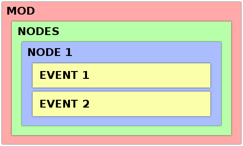
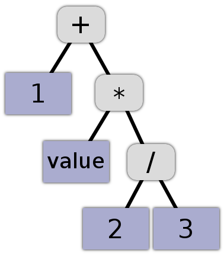

Orbi Universo (2019)

• Moteur : Unity
• Projet en équipe (5 membres)
• Rôle : Programmeur
Orbi Universo est un jeu de gestion dans lequel le joueur prend le contrôle d'une civilisation et son but est de la faire prospérer le plus longtemps possible.
La civilisation du joueur est présentée sous la forme d'éléments appelés noeuds, qui représentent les concepts fondamentaux qui caractérisent cette civilisation (Population, Gouvernement, Religion, Armée, ...)
Au cours de la partie, le joueur débloquera de nouveaux noeuds et ainsi fera évoluer sa civilisation selon ses envies.
L'un des principaux intérêts du jeu est la possibilité de modder son contenu à l'aide d'un language de programmation dédié permettant aux joueurs d'ajouter de nouveaux noeuds.
Structure des données liées au modding
Lors du développement de Orbi Universo, j'ai dû imaginer un moyen de représenter les données contenues dans les noeuds (nodes en anglais) de manière à ce que celles-ci soient facilement lisibles à la fois par les moddeurs et par le jeu lui-même.
Mon approche a été de regrouper les données dans des blocs sous la forme suivante :
// Block content here
}
Chaque bloc peut contenir d'autres blocs et ainsi former l'ensemble du mod, comme représenté sur ce schéma : 
Et enfin voici le résultat en code :
Main = {
Nodes = {
States = {
Population = {
VALUE value [ 0 5 10000 ]
DISPLAY_VALUE
TICK = {
PROCESS $PoliticalPower += PerSeconds(1.1)
PROCESS Food -= PerSeconds(value * value / 2000 * ( 0.99 ? 1.01 ))
IF value == 0
GAMEOVER
ENDIF
}
LINK Food = {
FLUX 0.5 + value / 500
COLOR red
}
}
}
}
}
- Le deuxième bloc (Vert) Contient tout les blocs représentant les noeuds.
- Le troisième bloc permet de séparer différents types de noeuds et n'est pas utile dans cet exemple.
- Le quatrième bloc (Bleu) Représente le noeud lui-même.
- Les deux derniers blocs (Jaune) Représente les événements exécutés par le noeud.
Lecture des expressions mathématiques
Prenons l'exemple suivant :
VALUE value [ 0 5 100 ] // Déclaration d'une variable appellé 'value'
TICK = {
PROCESS value = 1 + value * ( 2 / 3 )
}
}
La ligne PROCESS value = 1 + value * ( 2 / 3 ) calcule la valeur de 1 + value * ( 2 / 3 ) et la met dans la variable value
Pour que le moteur de jeu traduise cette ligne de texte en expression compréhensible par la machine, j'ai procédé de la manière suivante :
L'expression 1 + value * ( 2 / 3 ) comporte des opérateurs (+, *, /) avec des valeurs de chaque coté. Chaque opération doit être calculé dans le bon ordre (la division en premier, puis la multiplication, puis l'addition) Pour cela j'ai défini une interface pour représenter tout les opérateurs :
{
// Permet de calcuter le résultat de l'opération entre deux valeurs
float Evaluate(float _v1, float _v2);
}
Ainsi qu'une autre interface qui représente toutes les valeurs constantes ou variables (ici 1, value, 2 et 3) :
{
float Value { get; }
}
Chaque expression est alors stocké dans une classe:
{
public IArithmeticValue value1;
public IArithmeticValue value2;
public IArithmeticOperator expressionOperator;
public float Value
{
get {
return expressionOperator.Evaluate(value1.Value, value2.Value);
}
}
}
Comme vous avez pu le remarquer, la classe ArithmeticExpression implémente aussi l'interface IArithmeticValue, ce si signifie qu'une expression peut utiliser une autre expression comme valeur.
Pour en revenir à notre exemple, l'expression 1 + value * ( 2 / 3 ) peut être structurée sous la forme d'un arbre de plusieurs instances de ArithmeticExpression :  Il suffit alors de récupérer la valeur de l'expression ayant comme operateur + pour avoir le résultat de toute l'expression.